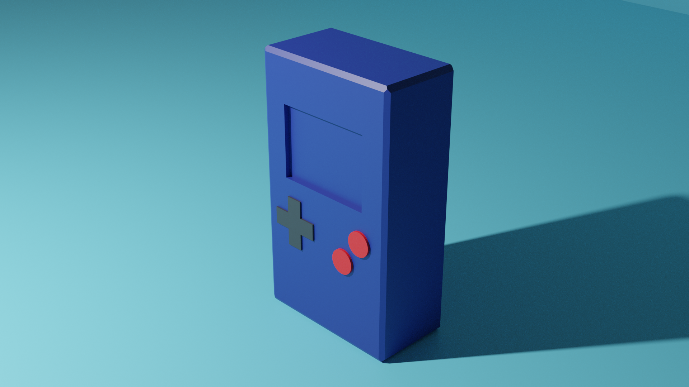

Microbit
Microbit Project Assessment: Tamagotchi
Introduction
Hello! Welcome to my website. Here I will guide you through the Microbit project I made. I will go through a brief description of the project, and my inspirations, and I will go through the design processes of my work.
Please enjoy!
Description
My microbit project is based on the old Tamagotchi games. The basic premise was to have a character or pet that you need to take care of. The character has a happiness meter and needs to be looked after. My design consists of a smiley face and a few basic inputs that do different things. It’s really not all that complicated
The Microbit is placed in a box that is 110mm x 45mm x 70mm and made of thin cardboard. The box includes a few small fake buttons purely for aesthetic
I had a lot of fun building and programming this project. I will go into much, much further detail later on.
 What is a Microbit?
What is a Microbit?
What are Microbits? The micro:bit is a pocket-sized computer that introduces you to how software and hardware work together.
It has an LED light display, buttons, sensors and many input/output features that, when programmed, let it
interact with you and your world. The new micro:bit with sound adds a built-in microphone and speaker, as
well as an extra touch input button and a power button. You might also hear the micro:bit referred to as a microcontroller. The board contains a microcontroller that can be programmed to perform specific tasks, but it also has input and output devices like buttons and an LED display which makes it more than a microcontroller.
A microprocessor plus memory, storage and physical input/output devices make a computer like the one you are reading this website on. The micro:bit is just a pocket-sized one.
Inspirations
As mentioned previously, the project is inspired om the old Tamagotchi pets. What is a ‘Tamagotchi’ you may ask? The Tamagotchi (In Japanese,"Egg Watch") is a handheld digital pet that was created in Japan by Akihiro
Yokoi of WiZ and Aki Maita of Bandai. It was released by Bandai on November 23, 1996 in Japan and in the USA on May 1, 1997, quickly becoming one of the biggest toy fads of the late 1990s and the early 2000s. As of March
2021, over 83 million units have been sold worldwide. Most Tamagotchi are housed in a small egg-shaped handheld video game with an interface consisting of three buttons, with the Tamagotchi Pix adding a shutter on the
top to activate the camera. The hype around them has died down since the early 2000s but still lives on in people’s memories.
 Another inspiration was the Gameboy controller. The holding container of the Microbit was modelled to look like the original Gameboy. The Game Boy is an 8-bit handheld game console developed and manufactured by
Nintendo. The console was released in North America later the same year, then in Europe in late 1990. It was designed by the same team that developed the Game & Watch series of handheld electronic games and several
Nintendo Entertainment System games: Satoru Okada, Gunpei Yokoi, and Nintendo Research & Development 1. I included some of its iconic features like the screen placement, the square appearance, and the buttons. It’s
not an exact replica but still resembles the original.
Another inspiration was the Gameboy controller. The holding container of the Microbit was modelled to look like the original Gameboy. The Game Boy is an 8-bit handheld game console developed and manufactured by
Nintendo. The console was released in North America later the same year, then in Europe in late 1990. It was designed by the same team that developed the Game & Watch series of handheld electronic games and several
Nintendo Entertainment System games: Satoru Okada, Gunpei Yokoi, and Nintendo Research & Development 1. I included some of its iconic features like the screen placement, the square appearance, and the buttons. It’s
not an exact replica but still resembles the original.
The Code
Microbit coding is really basic in its concept. It uses the classic block style of coding. I will go through all the features I included, and I will explain the code behind them.
I will also include screen shots of the code so you can see exactly what’s going on. Anyways, let me start with the beginning sequence:
Intro Sequence
The start is very similar to the Tamagotchi it is based off. Upon activating the pet, an egg appears on the screen. Then the egg will wiggle for several minutes, and then hatch into a small pet. This works similarly
on the Microbit. When it first turns on, an egg appears that plays a short 10-second animation of the egg hatching and displaying the pet.
Unlike the source material, there is no option to input a date or add a name.
This is sadly due to the limitations of the Microbit display.
The code is very simple here. All it does is show each frame individually and play a short jingle at the end. In the end, it also sets our first, and most important variable, “Start” to ‘True’. Before this,
any input will do nothing. Now, when a button is pressed it will play.
Features of the code
There are several feature that the charcter can do. I will go through these features and explain them:
Happiness
The character has a hidden happiness meter. Its base happiness at the start is 100. This value will decline every 5-10 seconds by up to 4 points.
If the happiness reaches zero, the display will show a sad face. In a previous version of the code, when the pet reached 0 happiness, a death sequence would occur.
The microbit would play an ambulance siren, a heartbeat that kept going faster would appear, and then, the microbit would flatline with a skull image. I saw this version to be
a bit morbid, so thats when I decided to change it to the current version. Funnily enough, when trying to fix the code, I accidentally caused the chartacter to be in an endless death-loop.
Although funny, it took a bit of time to fix up.
A button
When the A button (button on the left) is pressed, the charcter will smile briefly. This will increase its happiness by 10. This was the easiest thing to implement as the Microbit coder
allows for easy variable creation.
B button
When the B button (button on the right) is pressed, the Microbit display will show one of ten different images. This set of images includes:
- a heart
- a Pac-Man ghost
- a trident
- an umbrella
- a music note
- a smiley face with sunglasses
- a giraffe
- a duck
- a house
- a 'butterfly' (this last one looks a bit off)
The code behind this one was very simple. All it took was a random number generator between 1 and 10. Each number corresponds with a different image.
A button + B button
When both buttons are pressed simultaneously, the Happiness meter will be shown. If happiness is greater than 80, then the display will show an excited face. If happiness is between 30 and 50, then the display will show
a neutral face. However if happiness is below 30, then the display will show a sad face as a reminder to play with your pet. This feature was not too difficult to implement. All it took was a few 'less than' and 'greater than' symbols
to tell how happy the pet is.
Sleep
 Microbits have a built in light detector. I decided to try make use of it for the code. I programmed the sensor to go off when its light level reached 0.
When the Light level is 0, a image of a bed will be displayed and the pet closes its eyes. While in this sleeping state, no buttons can be activated as the 'Start' variable is set to 'False' and a new variable
'Sleep' is set to True. While sleeping, the face will occasionally drift up and down.
Microbits have a built in light detector. I decided to try make use of it for the code. I programmed the sensor to go off when its light level reached 0.
When the Light level is 0, a image of a bed will be displayed and the pet closes its eyes. While in this sleeping state, no buttons can be activated as the 'Start' variable is set to 'False' and a new variable
'Sleep' is set to True. While sleeping, the face will occasionally drift up and down.
Another built-in feature of the microbit is a shaking detection. If the pet is sleeping and it is shaken, the microbit will get dizzy and then awake.
However if the light level stays at 0, the pet will go back to sleep. This 'Sleep' section of code was infuriating to implement. I had the basic premise down quickly, however bugs kept appearing no matter what I did. It was always
either the 'True' statment being screwed up, or the light level not working consistingly. At one point the Microbit display was constatly at Light level 0, so the pet would fall into a coma the second it stared. Not fun working out the
issues, but the end was satisfying. -5/10 to implement.
Other notes
That pretty much finishes up the code section of the project. There were a few ideas that I wanted to implement but it was either, too late or I didnt have enough time. Some of these ideas included,
a passive blinking animation. This one was nearly added, but I ran out of time. You can still the prototype code that was left over for it. Another idea I had was to add some practical elements to the code
that would also increase happiness. One of these was a compass because of yet another built-in feature, the Accelerometer. However a lot of these features couldnt be implemented as there simply isn't enough input methods on
the base Microbit board. A tiny bit disappointing but it doesnt matter too much in the end.
Here! You can take a look at the code.
Design

As mentioned previously, I modelled the box around the Microbit after a Gameboy. To identify the required dimentions, I modelled to shape in Blender. Blender is a free and open-source 3D computer
graphics software toolset used for creating animated films, visual effects, art, 3D-printed models, motion graphics, interactive 3D applications, virtual reality, and, formerly, video games. This allowed me
to visualize how the box would look like in a more three-dimensual way. I also could play around with the colours a lot instead of wasting my times painting and using paint only to decide I dont like a particular colour.
One of the final renders are shown on the screen to the left.
Blender most definitely helped me on my design output. Not only with what dimensions I wanted but also the layout out of it.
The actual model was made out of cereal box cardboard (a very prestigious material). I marked out my lines using a T-square and a 45 degree set square, so that I could get proper 90 degree angles.
I drew out my surface development, I went to cutting out the shapes using a box cutter. This whole process took my less than a day so it wasn't too difficult.
Assembly
Not too many issues arose when it came to put everything together. However after I painted the first coat of paint and let it to dry overnight, the carboard started to cup. This was a big issue because of the square nature of the
design. A put a weight on the carboard before going to school and prayed that it would flatten out at least a bit. Luckily when I came back it was reletivaly flat and usable. I had to recut the whole at the back of the
box (this is where the microbit could be accesed from) because it was glued together from the paint. In the end it wasn't too big of a problem.
Another issue that occured was with the 'Shaking' that was required with sleeping. When you tried to shake the box the Microbit would become loose and fall inside the box. This was simply fixed by stuffing the inside of
the box with tissue paper to add some stability. The tissue worked and when the box was shook, the Microbit was held in place.
Conclusion
I had a lot of fun building and programming this project. I learned a lot about the design process and Microbit coding. If I were to redo the project, I would have added a few more features
and spend a bit more time on the model as I wasn't the most proud of how it turned out. Possibly even 3D print a box to hold the Microbit instead of hand-cut cardboard. If you made it this far, Thank You for reading!
Here's a little Microbit embed that allows you to actually play the code.